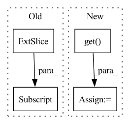

Pattern ID :42131
Before Change
caf_image = image.astype(np.float32)
if self.input_scale:
caf_image *= self.input_scale
caf_image = caf_image[:, :, ::-1]
if self.mean is not None:
caf_image -= self.mean
caf_image = caf_image.transpose((2, 0, 1))
caf_image = caf_image[np.newaxis, :, :, :]After Change
caf_image = image.astype(np.float32)
input_scale = self.input_scale.get(input_)
channel_order = self.channel_swap.get(input_)
mean = self.mean.get( input_)
if input_scale:
caf_image *= input_scale
if channel_order:
caf_image = caf_image[:, :, channel_order]In pattern: SUPERPATTERN
Frequency: 5
Non-data size: 4
Instances Fragment ID: 118286652
Project Name: BVLC/caffe
Commit Name: 96cd02dd538bcdb793070b4c9320eadfc9c7962d
Time: 2014-05-14
Author: shelhamer@imaginarynumber.net
File Name: python/caffe/pycaffe.py
M Class Name: AnonimousClass
N Class Name: AnonimousClass
M Method Name: _Net_format_image(3)
N Method Name: _Net_format_image(2)
M Parent Class:
N Parent Class:
M File Name: python/caffe/pycaffe.py
N File Name: python/caffe/pycaffe.py
M Start Line: 82
M End Line: 88
N Start Line: 101
N End Line: 126
Before Change
pl_penalty = (pl_lengths - pl_mean).square()
loss_Gpl = pl_penalty * self.pl_weight
loss_Gpl = (gen_img[:, 0, 0, 0] * 0 + loss_Gpl).mean() * float(gain)
loss_numpy["loss_Gpl"] = loss_Gpl.cpu().detach().numpy()
loss_Gpl.backward() // 咩酱：gain即上文提到的这个阶段的训练间隔。
After Change
if self.pl_weight == 0:
phase = {"Greg": "none", "Gboth": "Gmain"}.get(phase, phase)
if self.r1_gamma == 0:
phase = {"Dreg": "none", "Dboth": "Dmain"}.get( phase, phase)
blur_sigma = max(1 - cur_nimg / (self.blur_fade_kimg * 1e3), 0) * self.blur_init_sigma if self.blur_fade_kimg > 0 else 0
loss_numpy = {}
Fragment ID: 118286651
Project Name: miemie2013/miemiegan
Commit Name: c5e7ecffe23cf2fc2613ee06ec8fd94c8d7230ac
Time: 2022-03-24
Author: 53960695+miemie2013@users.noreply.github.com
File Name: mmgan/models/architectures/styleganv3_model.py
M Class Name: StyleGANv3Model
N Class Name: StyleGANv3Model
M Method Name: accumulate_gradients(9)
N Method Name: accumulate_gradients(9)
M Parent Class: torch.nn.Module
N Parent Class: torch.nn.Module
M File Name: mmgan/models/architectures/styleganv3_model.py
N File Name: mmgan/models/architectures/styleganv3_model.py
M Start Line: 140
M End Line: 251
N Start Line: 140
N End Line: 251
Before Change
curr_local_trend = \
last_local_trend_level + damped_factor.flatten() * last_local_trend_slope
full_local_trend[:, idx] = curr_local_trend
full_global_trend[:, idx] = full_global_trend[:, idx - 1] + global_trend_slope
if include_error:
error_value = nct.rvs(After Change
else:
damped_factor = model.get(dlt.DampedTrendStanSamplingParameters.DAMPED_FACTOR.value)
global_trend_level = model.get( dlt.BaseStanSamplingParameters.GLOBAL_TREND_LEVEL.value)
global_trend_slope = model.get(dlt.BaseStanSamplingParameters.GLOBAL_TREND_SLOPE.value)
// if self.use_log_global_trend:
// global_trend_shape = model.get(
// dlt.LogGlobalTrendSamplingParameters.GLOBAL_TREND_SHAPE.value)
global_trend = model.get(dlt.BaseStanSamplingParameters.GLOBAL_TREND.value)
// regression components
pr_beta = model.get(dlt.RegressionStanSamplingParameters.POSITIVE_REGRESSOR_BETA.value)
rr_beta = model.get(dlt.RegressionStanSamplingParameters.REGULAR_REGRESSOR_BETA.value)
if pr_beta is not None and rr_beta is not None:
pr_beta = pr_beta if len(pr_beta.shape) == 2 else pr_beta.reshape(1, -1)
rr_beta = rr_beta if len(rr_beta.shape) == 2 else rr_beta.reshape(1, -1)
regressor_beta = torch.cat((pr_beta, rr_beta), dim=1)
else:
regressor_beta = pr_beta or rr_beta
////////////////////////////////////////////////////////////////////////////////////////////////////////////////////////////////
// Prediction Attributes
////////////////////////////////////////////////////////////////////////////////////////////////////////////////////////////////
// get training df meta
training_df_meta = self.training_df_meta
// remove reference from original input
df = df.copy()
if self.auto_scale:
df = self._scale_df(df, do_fit=False)
// for multiplicative model
if self.is_multiplicative:
df = self._log_transform_df(df, do_fit=False)
// get prediction df meta
prediction_df_meta = {
"date_array": pd.to_datetime(df[self.date_col]).reset_index(drop=True),
"df_length": len(df.index),
"prediction_start": df[self.date_col].iloc[0],
"prediction_end": df[self.date_col].iloc[-1]
}
if not is_ordered_datetime(prediction_df_meta["date_array"]):
raise IllegalArgument("Datetime index must be ordered and not repeat")
// TODO: validate that all regressor columns are present, if any
if prediction_df_meta["prediction_start"] < training_df_meta["training_start"]:
raise PredictionException("Prediction start must be after training start.")
trained_len = training_df_meta["df_length"]
output_len = prediction_df_meta["df_length"]
// If we cannot find a match of prediction range, assume prediction starts right after train
// end
if prediction_df_meta["prediction_start"] > training_df_meta["training_end"]:
forecast_dates = set(prediction_df_meta["date_array"])
n_forecast_steps = len(forecast_dates)
// time index for prediction start
start = trained_len
else:
// compute how many steps to forecast
forecast_dates = \
set(prediction_df_meta["date_array"]) - set(training_df_meta["date_array"])
// check if prediction df is a subset of training df
// e.g. "negative" forecast steps
n_forecast_steps = len(forecast_dates) or \
-(len(set(training_df_meta["date_array"]) - set(
prediction_df_meta["date_array"])))
// time index for prediction start
start = pd.Index(
training_df_meta["date_array"]).get_loc(prediction_df_meta["prediction_start"])
full_len = trained_len + n_forecast_steps
////////////////////////////////////////////////////////////////////////////////////////////////////////////////////////////////
// Regression Component
////////////////////////////////////////////////////////////////////////////////////////////////////////////////////////////////
// calculate regression component
if self.regressor_col is not None and len(self.regular_regressor_col) > 0:
regressor_beta = regressor_beta.t()
regressor_matrix = df[self.regressor_col].values
regressor_torch = torch.from_numpy(regressor_matrix)
regressor_component = torch.matmul(regressor_torch, regressor_beta)
regressor_component = regressor_component.t()
else:
// regressor is always dependent with df. hence, no need to make full size
regressor_component = torch.zeros((num_sample, output_len), dtype=torch.double)
////////////////////////////////////////////////////////////////////////////////////////////////////////////////////////////////
// Seasonality Component
////////////////////////////////////////////////////////////////////////////////////////////////////////////////////////////////
// calculate seasonality component
if self.seasonality > 1:
if full_len <= seasonality_levels.shape[1]:
seasonality_component = seasonality_levels[:, :full_len]
else:
seasonality_forecast_length = full_len - seasonality_levels.shape[1]
seasonality_forecast_matrix = \
torch.zeros((num_sample, seasonality_forecast_length), dtype=torch.double)
seasonality_component = torch.cat(
(seasonality_levels, seasonality_forecast_matrix), dim=1)
else:
seasonality_component = torch.zeros((num_sample, full_len), dtype=torch.double)
////////////////////////////////////////////////////////////////////////////////////////////////////////////////////////////////
// Trend Component
////////////////////////////////////////////////////////////////////////////////////////////////////////////////////////////////
// calculate level component.
// However, if predicted end of period > training period, update with out-of-samples forecast
if full_len <= trained_len:
full_local_trend = local_trend[:, :full_len]
full_global_trend = global_trend[:, :full_len]
else:
trend_forecast_length = full_len - trained_len
trend_forecast_init = \
torch.zeros((num_sample, trend_forecast_length), dtype=torch.double)
full_local_trend = torch.cat((local_trend[:, :full_len], trend_forecast_init), dim=1)
full_global_trend = torch.cat((global_trend[:, :full_len], trend_forecast_init), dim=1)
last_local_trend_level = local_trend_levels[:, -1]
last_local_trend_slope = local_trend_slopes[:, -1]
for idx in range(trained_len, full_len):
// based on model, split cases for trend update
curr_local_trend = \
last_local_trend_level + damped_factor.flatten() * last_local_trend_slope
full_local_trend[:, idx] = curr_local_trend
// full_global_trend[:, idx] = full_global_trend[:, idx - 1] + global_trend_slope
// if self.use_log_global_trend:
// full_global_trend[:, idx] = \
// global_trend_level + global_trend_slope * torch.log(
// 1 + global_trend_shape * (idx - 1))
if self.use_log_global_trend:
full_global_trend[:, idx] = \
global_trend_level + torch.log(1 + global_trend_slope * idx)
else:
full_global_trend[:, idx] = \
global_trend_level + global_trend_slope * (idx - 1)
if include_error:
error_value = nct.rvs( Fragment ID: 118286644
Project Name: uber/orbit
Commit Name: 198bc77400a6f1acda2e3b751d9633542c2ee3c1
Time: 2020-03-27
Author: edwinng@uber.com
File Name: orbit/dlt.py
M Class Name: DLT
N Class Name: DLT
M Method Name: _predict(4)
N Method Name: _predict(4)
M Parent Class: LGT
N Parent Class: LGT
M File Name: orbit/dlt.py
N File Name: orbit/dlt.py
M Start Line: 242
M End Line: 367
N Start Line: 210
N End Line: 385
Before Change
f"File {filename} not found in the list of available files: {list(self.FILE_ID_NAME.keys())}."
GoogleDriveDownloader(self.FILE_ID_NAME[filename], path, skip_existing=True, verbose=False).download()
ts = np.load(path)
ts = ts[:, :700]
n_neurons, n_shape = ts.shape
sample = np.random.randint(n_neurons, size=sample_size)
data = ts[sample, :]
After Change
data[neuron, :] = data[neuron, :] / (np.max(data[neuron, :]) + 1e-5)
self.original_time_series = data
self.x = torch.tensor(data.T, dtype=torch.float32, device=device)
self._n_time_steps = int(np.clip(kwargs.get( "n_time_steps", self.max_time_steps) , -np.inf, self.max_time_steps))
@property
def n_time_steps(self): Fragment ID: 118286645
Project Name: neurotorch/neurotorch
Commit Name: e17747165413ef12bdb978271cb53171dca43bc2
Time: 2022-10-12
Author: 50332514+JeremieGince@users.noreply.github.com
File Name: tutorials/time_series_forecasting_wilson_cowan/dataset.py
M Class Name: WSDataset
N Class Name: WSDataset
M Method Name: __init__(6)
N Method Name: __init__(6)
M Parent Class: Dataset
N Parent Class: Dataset
M File Name: tutorials/time_series_forecasting_wilson_cowan/dataset.py
N File Name: tutorials/time_series_forecasting_wilson_cowan/dataset.py
M Start Line: 47
M End Line: 49
N Start Line: 48
N End Line: 58
Before Change
if self.graph_mode == "dq":
graph_pred_x[:, :-1] = pred_x
else:
graph_pred_x[:, 4:-1] = pred_x
// Construct predicted Batch object directly because PyG-T does so. Apart from the nodes" x values,
// All other attributes are taken from the target graph.After Change
def pred_n(self, input_signal, device, pred_length=1, **kwargs):
teacher_forcing_ratio = kwargs.get("teacher_forcing_ratio", 0) // non-zero only if specified and during training
test_mode = kwargs.get( "test", False) // True only during testing -> instead of loss, metric is returned.
snapshots = [snap for snap in iter(input_signal)]
T = len(snapshots)
input_length = T - pred_length Fragment ID: 118286647
Project Name: ais-bonn/vp-suite
Commit Name: 3b554438d5ca8fcd64241c10f424902093206449
Time: 2021-10-14
Author: boltres@ais.uni-bonn.de
File Name: models/graph_pred/rgcn.py
M Class Name: RecurrentGCN
N Class Name: RecurrentGCN
M Method Name: pred_n(4)
N Method Name: pred_n(4)
M Parent Class: torch.nn.Module
N Parent Class: torch.nn.Module
M File Name: models/graph_pred/rgcn.py
N File Name: models/graph_pred/rgcn.py
M Start Line: 42
M End Line: 92
N Start Line: 51
N End Line: 103